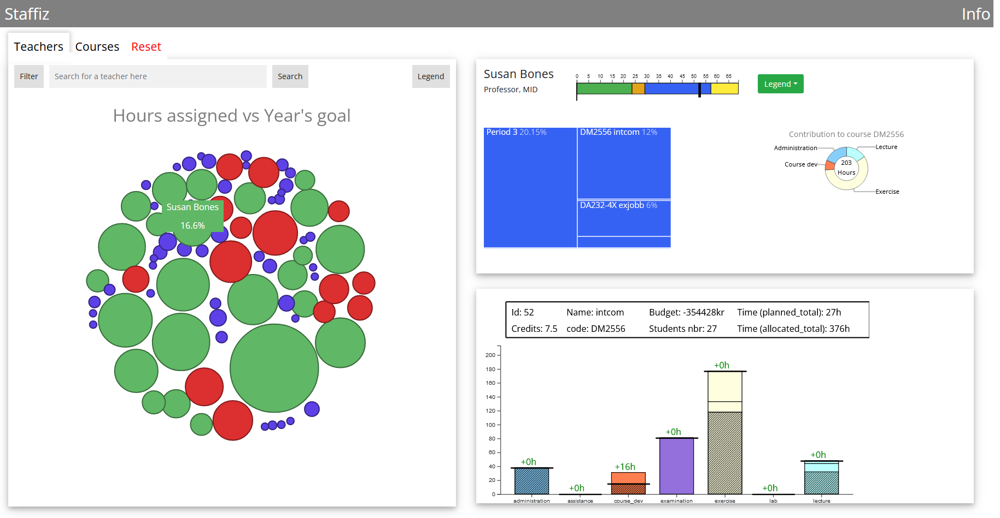

Web, React
Description: We were tasked with making a visualization for a teacher at KTH. The visualization gives an overview of teachers and courses with too many or too few allocated work hours. We used JavaScript, CSS, HTML, React, D3.js Link:
Background
This project involved designing and implementing visual mappings and structures, based on insights from the Information Visualization course at KTH, to create a tool for the Director of Studies Jarmo Laaksolahti and other KTH staff. The goal was to replace error-prone spreadsheets with an interactive system that gives quick overviews of courses and teachers, supports better decision-making, and improves communication.
Goals
Challenges
Visual Structures
The tool transformed spreadsheet data into various visual formats:
Learning Objectives Reached
I applied the visual information seeking mantra of “overview, zoom, filter, and details on demand,” learned to assess end-user needs through stakeholder collaboration, and improved design effectiveness, efficiency, usability, and usefulness. The project also developed the my skills in creating interactive visualizations, facilitating insights, and presenting to both peers and stakeholders.
Team Contribution
Responsible for designing the main Staffiz visualizations alongside two team members. Conducted research, brainstormed ideas, and ensured designs were informative, aesthetically pleasing, and user-friendly. Gained hands-on front-end experience in React.